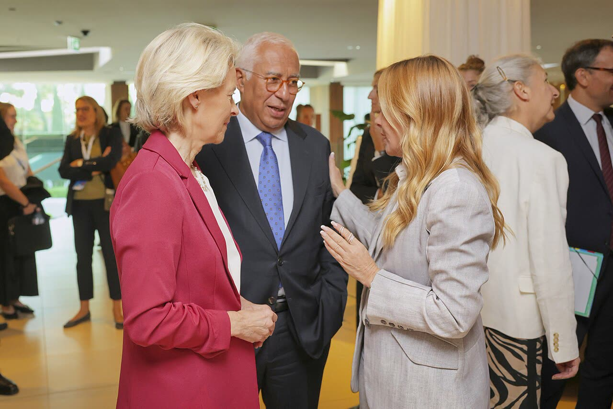

Meloni a Costa: l'Ue decida chi tratta sull'Ucraina, e con quale mandato
Chi paga deve avere voce prima, ma la richiesta è la quinta da giugno e sempre più vaga: e se il mandato lo scrive Bruxelles avremo più Europa, non più Italia.
Redazione Contrappunto · aggiornato il 06.11.2026

_in_Split,_Croatia_(P-070612-00-04).jpg){kind=link}
Il 5 novembre la presidente del Consiglio Giorgia Meloni ha scritto ad António Costa, presidente del Consiglio europeo, cioè delle riunioni dei capi di Stato e di governo dei 27 paesi Ue. Chiede che l'Europa parli «con una sola voce» sull'Ucraina e che si decida chi siede al tavolo dei negoziati per l'Ue, e con quale mandato: discussione al vertice informale di Dublino del 13 novembre, decisione al Consiglio europeo di dicembre. Conta perché la trattativa accelera: il 10 e 11 novembre ad Abu Dhabi si incontrano Stati Uniti, Ucraina e Russia, e a Bruxelles americani ed europei hanno già parlato di garanzie di sicurezza per Kiev, senza l'Italia. Verifichiamo se è vero che l'Europa tratta in ordine sparso e senza mandato.
Vedi di più: 8 parole spiegate, cosa si racconta
Cosa si raccontaLe agenzie (ANSA, Adnkronos, Dire) e quasi tutti i giornali riportano la lettera per intero o quasi; sul sito del governo non c'è. Il tono prevalente è quello della fermezza: Open parla di «strigliata», Il Foglio racconta in un retroscena che a Dublino Meloni «si incazzerà», il Giornale dà spazio alla risposta di Costa. Dire titola «Non accetteremo negoziati Ue in assenza di mandato», ma la lettera rifiuta gli impegni presi senza mandato, non i negoziati. A sinistra il manifesto titola «Le lettere a vuoto di Meloni» e scrive di «gelo a Bruxelles» (letti solo titolo e sommario); il Fatto Quotidiano lega la lettera alla sconfitta dei repubblicani di Trump alle elezioni di metà mandato. ANSA Europa vede un'«intesa lontana». Quasi nessuno ricorda che Meloni chiede la stessa cosa da giugno. [ANSA] [Adnkronos] [Agenzia DIRE] [Open] [Il Foglio] [il Giornale] [il manifesto] [Il Fatto Quotidiano] [ANSA Europa]
- António Costa e il Consiglio europeo
- Costa, ex primo ministro del Portogallo, presiede il Consiglio europeo, l'organo che riunisce i capi di Stato e di governo dei 27: prepara i vertici e ne guida la discussione, ma decidono i governi. Non è la Commissione, guidata da Ursula von der Leyen. A giugno alcuni leader lo vedevano come il rappresentante naturale dell'Ue nei negoziati, e il suo capo di gabinetto aveva aperto un canale diplomatico con il Cremlino.
- Vertice informale di Dublino
- Una riunione dei 27 leader senza decisioni formali, il 13 novembre, convocata in origine per parlare di casa. Il giorno prima, sempre a Dublino, c'è la Comunità politica europea, che riunisce i paesi Ue e i vicini europei, Regno Unito e Norvegia compresi.
- Mandato
- L'incarico formale con cui i governi dicono a chi tratta per loro cosa può offrire e cosa no. Oggi per l'Ue non c'è: chi siede ai tavoli lo fa per il proprio paese o su incarico informale. La lettera non dice chi debba darlo, con quali regole di voto, né se al tavolo debba sedere una persona o più.
- E3
- Francia, Germania e Regno Unito: i tre paesi che da mesi parlano con Washington e Kiev di fatto a nome dell'Europa. Il Regno Unito non è nell'Ue; l'Italia non ne fa parte.
- Coalizione dei Volenterosi
- Il gruppo di paesi nato attorno all'E3 per sostenere politicamente e militarmente l'Ucraina anche a prescindere dagli Stati Uniti. Prossimo vertice a Berlino il 19 novembre. L'Italia partecipa ma ha sempre escluso l'invio di militari.
- Abu Dhabi
- La capitale degli Emirati Arabi Uniti, dove il 10 e 11 novembre gli Stati Uniti mediano colloqui tecnici tra Ucraina e Russia, annunciati da Steve Witkoff, inviato speciale di Trump. Nelle fonti lette al tavolo ci sono solo Stati Uniti, Ucraina e Russia.
- Alta rappresentante
- La responsabile della politica estera dell'Ue, oggi l'estone Kaja Kallas: guida i ministri degli Esteri dei 27 e il servizio diplomatico dell'Unione.
- Copasir
- Il Comitato parlamentare per la sicurezza della Repubblica: qui il governo illustra, in modo riservato, i pacchetti di armi e aiuti militari per Kiev.
- Il 5 novembre Giorgia Meloni ha scritto al presidente del Consiglio europeo António Costa: l'Ue decida chi tratta sull'Ucraina e con quale mandato, ne parli a Dublino il 13 novembre e decida a dicembre.
- L'Italia non accetta impegni negoziati senza mandato e per sé non chiede ruoli. Costa ne parlerà a Dublino, ma vuole l'Ue rappresentata dalle sue istituzioni.
- L'Europa tratta davvero in ordine sparso; due esempi della lettera sono imprecisi o non verificabili, e Meloni chiede la stessa cosa da giugno.
- [✓] L'Ue non ha mai deciso chi la rappresenta nei negoziati sull'Ucraina: lo scrivono il Kyiv Independent e ANSA Europa, e lo diceva Merz a giugno.
- [✓] L'Europa si muove in formati diversi: Miami con Seibert e l'E3, la telefonata di Stubb e Støre a Putin, le riunioni di Bruxelles del 4-5 novembre sulle garanzie di sicurezza, senza l'Italia.
- [⇄] Miami non fu «confermato solo successivamente, da fonti statunitensi»: Zelensky l'aveva annunciato l'8 ottobre e fonti Ue l'hanno confermato il 9.
- [?] La «presenza europea» ad Abu Dhabi non trova riscontro nelle fonti lette; del «formato Berlino» del 12 novembre la lettera dice solo che è una riunione a margine della Comunità politica europea, senza che abbiamo trovato su cosa sia.
- [✓] La richiesta non è nuova: 11 e 17 giugno, 14 e 27 ottobre. Da un inviato unico si è passati a «chi siede al tavolo».
- [✓] Costa ne parlerà a Dublino, ma risponde che gli interessi dell'Ue li rappresentano «le sue istituzioni, nel rispetto dei Trattati».
Open la chiama «strigliata» all'Ue. Il manifesto, letto solo nel titolo e nel sommario, parla di «lettere a vuoto» e, come ANSA Europa, di un «negoziatore». Quella parola nella lettera non c'è: Meloni non fa nomi, chiede di decidere chi siede al tavolo «e con quale mandato». [10] [16] [5] [1]
Sui fatti la lettera regge. L'Ue non ha mai deciso chi la rappresenta. A Miami, il 9 ottobre, per Bruxelles sedeva Seibert, capo di gabinetto di von der Leyen, e diplomatici di tre paesi non lo sapevano. Il 27 ottobre Stubb e Støre hanno telefonato a Putin a titolo nazionale. Il 4 e 5 novembre, a Bruxelles, americani, E3, Ue e NATO hanno parlato di garanzie per Kiev: l'Italia non c'era. Due esempi però sono imprecisi o non verificabili: Miami l'aveva annunciato Zelensky il giorno prima, e sulla «presenza europea» ad Abu Dhabi le fonti lette non danno né tracce né smentite. [22] [23] [20] [21] [14] [1]
Non è nemmeno una novità. L'11 giugno Meloni denunciava la «frammentazione». Il 17 giugno voleva un inviato unico, di un paese medio, e annunciava un suo candidato. Il 14 ottobre andava bene anche l'E3, purché con «un mandato ufficiale dato da tutti». Il 27 ottobre Palazzo Chigi parlava di «una o più personalità». Dall'inviato unico a «chi siede al tavolo»: proposta più vaga, richiesta più formale. [29] [32] [33] [28] [25]
La frase che conta è un'altra: l'Italia non accetta che «si negozino, in assenza di un mandato, impegni» che poi dovrà rispettare anche lei. Le garanzie di sicurezza discusse a Bruxelles, prima o poi, passano anche dai conti italiani. Chi paga deve decidere prima, non firmare dopo. Qui Meloni ha ragione, e avrebbe ragione chiunque governasse a Roma. [1] [20]
Ma la partita vera è chi scrive il mandato. Costa ha già risposto che l'Ue la rappresentano «le sue istituzioni». Se finisce così, a trattare sarà Bruxelles: più Europa, non più Italia. Sui soldi non cambia niente: lo stesso giorno Crosetto annuncia nuovi aiuti. Il nostro giudizio: richiesta giusta, ma a dicembre il governo si batta sul testo del mandato, non sulla sedia. E dica prima quali impegni è disposto a prendere, e quanto ci costano. [15] [3]
La verifica punto per punto26 passaggi, 38 fonti
Qui sotto ogni cosa scritta sopra, una per una, con le fonti. Confermato: lo dice un documento originale o più fonti lette. Plausibile: lo riportano fonti serie, ma non abbiamo letto l'originale. Discordante: le fonti danno numeri diversi, e diciamo quali. Ipotesi e Opinione sono il nostro ragionamento, separato dai fatti.
Cosa chiede la lettera
Il 5 novembre Meloni ha scritto a Costa che parlare «con una sola voce» sull'Ucraina è una «necessità ormai improcrastinabile», e chiede di decidere «chi siede al tavolo negoziale in rappresentanza dell'Unione europea, e con quale mandato».
Chiede di discuterne al vertice informale di Dublino del 13 novembre e di decidere a dicembre, «anche dopo un raccordo con Regno Unito, Norvegia e gli altri partner europei interessati».
Per sé non chiede nulla: «non chiedo questo ruolo né per me né per l'Italia». Ma «non siamo disposti ad accettare che si negozino, in assenza di un mandato, impegni che anche la nostra Nazione sarà poi chiamata ad assumere».
Le parole «inviato», «negoziatore» e «rappresentante unico» non sono nella lettera, ma in titoli e sommari (ANSA Europa, il manifesto). Sul sito del governo il testo non c'è.
Il buono · Il disordine è vero
Kyiv Independent, 9 ottobre: «the EU has never been able to agree on who has the right to represent it in peace negotiations». A giugno il cancelliere Merz: «Who speaks for the European Union is something we don't need to decide on today».
A Miami, il 9 ottobre, delegazioni di Stati Uniti e Ucraina hanno tenuto colloqui di pace. Per l'Ue sedeva Bjoern Seibert, capo di gabinetto di von der Leyen, con i consiglieri dell'E3; diplomatici di tre paesi Ue non lo sapevano.
Il 27 ottobre il presidente finlandese Stubb e il premier norvegese Støre hanno telefonato a Putin, secondo Yle «not on behalf of Europe as a whole». La premier danese Frederiksen: «It was not coordinated with any of us».
Il 4 e 5 novembre, a Bruxelles, gli emissari di Trump hanno visto Francia, Germania, Regno Unito, Ue e NATO per parlare di «Ukraine's security guarantees, Europe's future security framework» (Reuters). L'Italia non c'era.
Gli elenchi dei presenti a Bruxelles non coincidono (Reuters, Commissione, Zelensky): le riunioni erano due, ricostruzione e garanzie. L'Italia non c'è in nessuno.
Il 19 novembre i Volenterosi si riuniscono a Berlino, ha annunciato Merz il 3 novembre. Meloni ha sempre escluso l'invio di militari italiani.
Il cattivo · Due esempi imprecisi o non verificabili
La lettera dice che Miami «è stato confermato solo successivamente, da fonti statunitensi». Ma Zelensky l'aveva annunciato l'8 ottobre («U.S. officials as well as Europeans and NATO») e fonti Ue lo confermavano il 9. Lo stesso Kyiv Independent riporta però che diplomatici di tre paesi Ue non sapevano di Seibert: dettaglio sbagliato, sostanza che regge.
Della «non meglio precisata presenza europea» ad Abu Dhabi, nelle fonti lette, nessuna traccia né una smentita: Witkoff e Reuters citano solo USA, Ucraina e Russia. Il «formato Berlino» del 12 novembre, a margine della Comunità politica europea, ha per la lettera «una composizione ancora diversa»: cosa sia non l'abbiamo trovato.
Non è una novità
L'11 giugno, alla Camera, Meloni denunciava «frammentazione, confusione e debolezza». Il 17 giugno chiedeva un «émissaire unique» scelto tra le «puissances moyennes» (Reuters) e annunciava un suo candidato per il vertice Ue.
Il 14 ottobre, al Senato, andava bene anche l'E3, purché con «un mandato ufficiale dato da tutti». Il 27 ottobre Palazzo Chigi: «una o più personalità». La lettera: «sono costretta a tornare su un tema che ho più volte sollevato».
Se il candidato di giugno sia mai stato presentato, e chi fosse, le fonti che abbiamo letto non lo dicono.
Le risposte
Costa ha risposto la sera stessa: a Dublino «dedicherò del tempo a questa discussione» (ANSA). Il Giornale aggiunge: «gli interessi dell'Ue devono essere rappresentati dalle sue istituzioni, nel rispetto dei Trattati».
Kaja Kallas, secondo ANSA: «Sono d'accordo con la premier sul fatto che non dovremmo parlare con voci diverse».
Chi paga e chi decide
Lo stesso giorno il ministro della Difesa Crosetto, al Senato, annuncia un nuovo pacchetto di aiuti che sarà discusso al Copasir la settimana dopo, e aggiunge: «Proporrò inoltre la possibilità di prolungare il meccanismo del decreto». È il decreto che autorizza a cedere materiali militari all'Ucraina, valido fino al 31 dicembre 2026.
Più testate scrivono che Salvini è contrario al nuovo decreto; sue dichiarazioni dirette non le abbiamo lette. Per Silvestri (M5S), nel Fatto, Meloni vuole «mendicare protagonismo».
Il 5 novembre, dopo aver visto l'inviato russo Dmitriev, Trump ha detto che l'accordo «might involve all of Europe». Non ha detto quali impegni.
Tra le righe
A dicembre difficilmente uscirà un nome con un mandato: al massimo una formula generica nelle conclusioni.
Ragionamento: Costa risponde che la rappresentanza spetta alle istituzioni; una fonte diplomatica anonima dice ad ANSA Europa che è difficile aprire ora la questione; da giugno l'Ue ha «deciso di non decidere» e Merz diceva che non serviva farlo.
Il vero obiettivo della lettera è avere voce prima che si fissino garanzie e ricostruzione, più che una persona al tavolo.
Ragionamento: La richiesta è scesa da un inviato unico (giugno) a «chi siede» (novembre), mentre la frase sugli impegni negoziati senza mandato è la più netta; la lettera arriva dopo le riunioni di Bruxelles sulle garanzie, senza l'Italia, e prima di Abu Dhabi.
Se il mandato deve avere l'accordo di tutti i 27, basta un governo contrario per bloccarlo; l'esito più probabile è un rappresentante delle istituzioni Ue con un mandato vago.
Ragionamento: Costa indica «le sue istituzioni»; a giugno alcuni leader vedevano già lui come rappresentante naturale (Euronews, AP). Le regole di voto dei Trattati non le abbiamo lette: è una lettura politica, non giuridica.
Il peso dell'Italia nei formati ristretti dipende anche da scelte sue: niente soldati, poche presenze ai Volenterosi.
Ragionamento: Il Post documenta il no ai militari e assenze di Meloni a riunioni dei Volenterosi; che sia questa la causa dell'esclusione è un'inferenza, non un fatto.
La tesi più forte dei critici
Le critiche serie: la rappresentanza c'è già nelle istituzioni Ue, un inviato legittima Mosca, chi non manda soldati non dà mandati. Nessuna spiega perché l'Italia debba pagare impegni presi senza di lei.
Il nostro giudizio
Richiesta giusta, ma alla quinta versione. A dicembre il governo si batta sul testo del mandato, non sulla sedia, e dica quali impegni è disposto a prendere e quanto costano. Se il mandato lo scrive Bruxelles, avremo più Europa, non più Italia.
Fonti38, tutte con il link
- Ucraina, l'appello di Meloni: "Ue parli con una sola voce, Italia non accetta impegni presi da altri" (5 novembre 2026; versione di riferimento della lettera) (Adnkronos) · consultata il 06.11.2026
- Meloni: improcrastinabile che Europa parli a una voce sola su Kiev (5 novembre 2026) (Avvenire) · consultata il 06.11.2026
- Guerra Ucraina, Meloni a Costa: «Improcrastinabile che l'Europa parli a una voce sull'Ucraina». La lettera (diretta, 5 novembre 2026) (Il Messaggero) · consultata il 06.11.2026
- Meloni a Costa, improcrastinabile che l'Europa parli a una voce sull'Ucraina (5 novembre 2026) (ANSA) · consultata il 06.11.2026
- Meloni a Costa: "Su Kiev una voce sola". Lui apre con prudenza: "Ne parleremo" (5 novembre 2026, 22.08) (ANSA Europa) · consultata il 06.11.2026
- >>>ANSA/ Meloni scrive a Costa, 'su Kiev una voce sola'. Asse con Kallas ma intesa lontana (5 novembre 2026, 21.50) (ANSA Europa) · consultata il 06.11.2026
- Ucraina, Meloni scrive a Costa: “L’Europa parli con una voce sola” (5 novembre 2026) (Il Tempo) · consultata il 06.11.2026
- Ucraina, Meloni scrive a Costa: "Non accetteremo negoziati Ue in assenza di mandato" (5 novembre 2026) (Agenzia DIRE) · consultata il 06.11.2026
- Meloni scrive ad Antonio Costa: "Sull'Ucraina l'Europa parli con una voce sola" (5 novembre 2026) (Il Foglio) · consultata il 06.11.2026
- Meloni scrive a Costa, la strigliata all'Ue sui negoziati per Kiev (5 novembre 2026) (Open) · consultata il 06.11.2026
- Dopo la batosta di Trump, Meloni cerca la Ue: chi negozia sull'Ucraina? (5 novembre 2026; a pagamento, letta la parte visibile) (Il Fatto Quotidiano) · consultata il 06.11.2026
- Meloni urges EU to agree on representative for Ukraine peace talks (6 novembre 2026, da Bloomberg) (Ukrinform) · consultata il 06.11.2026
- Trump announces 'big deal' that concerns Ukraine and all of Europe (6 novembre 2026) (Ukrinform) · consultata il 06.11.2026
- US will mediate upcoming Ukraine-Russia talks in Abu Dhabi, Witkoff says (2 novembre 2026) (Fox News) · consultata il 06.11.2026
- “L’Europa agisca con coerenza, unità e determinazione”: Antonio Costa risponde a Georgia Meloni (6 novembre 2026) (il Giornale) · consultata il 06.11.2026
- Le lettere a vuoto di Meloni: «L’Ue parli con una sola voce» (6 novembre 2026; a pagamento, letti titolo e sommario) (il manifesto) · consultata il 06.11.2026
- Bollette, Ucraina e fine vita Il centrodestra è nel caos (5 novembre 2026; a pagamento, letto l'attacco) (Domani) · consultata il 06.11.2026
- Ordine del giorno provvisorio del Coreper II, 4 e 6 novembre 2026 (ST 15156/26): punto 2, riunione informale dei capi di Stato e di governo, Dublino, 13 novembre 2026 (Consiglio dell'Unione europea) · consultata il 06.11.2026
- The 10th summit of the European Political Community will take place in Zurich (25 settembre 2026: il prossimo vertice è a Dublino il 12 novembre 2026) (Confederazione svizzera) · consultata il 06.11.2026
- US to hold trilateral talks with Ukraine, Russia in Abu Dhabi next week-US official (Steve Holland, 2 novembre 2026) (Reuters (via Internazionale)) · consultata il 06.11.2026
- EU to Hold Security Meeting with US, Ukraine Today with UK, NATO in Attendance (4 novembre 2026; cita la portavoce della Commissione Paula Pinho) (SBS) · consultata il 06.11.2026
- EU represented by von der Leyen's right-hand at Ukraine peace talks, sources say (9 ottobre 2026) (The Kyiv Independent) · consultata il 06.11.2026
- Stubb says peace efforts back on track following phone call with Putin (27 ottobre 2026) (Yle) · consultata il 06.11.2026
- Putin call pits Finland and Norway against Denmark and Sweden (27 ottobre 2026) (Euronews) · consultata il 06.11.2026
- Lo strano caso della telefonata a Putin arrivata da Oslo e Helsinki (28 ottobre 2026) (Avvenire) · consultata il 06.11.2026
- German Chancellor: Coalition of the Willing summit to be held in Berlin on November 19 (3 novembre 2026) (APA) · consultata il 06.11.2026
- Perché Meloni critica Francia, Germania e Regno Unito sull'Ucraina (15 ottobre 2026) (Il Post) · consultata il 06.11.2026
- Meloni, se l'E3 pensa di far meglio sull'Ucraina almeno abbia un mandato ufficiale (ANSA, 14 ottobre 2026) (il Nord Est) · consultata il 06.11.2026
- Ucraina, Meloni: "Sostegno a Kiev non cambia, ma l'Europa assuma ruolo guida nei negoziati con Mosca" (11 giugno 2026) (LaPresse) · consultata il 06.11.2026
- EU leaders squabble over outreach to Moscow as Ukraine war rages on (19 giugno 2026) (AP (via WTOP)) · consultata il 06.11.2026
- Costa defends surprise decision to open diplomatic channel with Russia (19 giugno 2026) (Euronews) · consultata il 06.11.2026
- Meloni plaide pour un émissaire unique de l'UE auprès de la Russie (Reuters, Crispian Balmer, 17 giugno 2026) (Boursorama (Reuters)) · consultata il 06.11.2026
- Meloni to nominate candidate for EU role in Russia-Ukraine peace talks (17 giugno 2026) (Ukrinform) · consultata il 06.11.2026
- Italy's PM to propose EU envoy candidate for negotiations on Russia's war against Ukraine (17 giugno 2026) (European Pravda) · consultata il 06.11.2026
- No rush: EU leaders schedule housing meeting for November as crisis bites (30 aprile 2026) (Brussels Signal) · consultata il 06.11.2026
- Governo italiano, elenco «Notizie» (letto il 6 novembre 2026: la lettera non c'è) (Governo italiano) · consultata il 06.11.2026
- Governo italiano, elenco «Comunicati stampa» (letto il 6 novembre 2026: la lettera non c'è) (Governo italiano) · consultata il 06.11.2026
- Decreto-legge 31 dicembre 2025, n. 201: proroga dell'autorizzazione alla cessione di mezzi, materiali ed equipaggiamenti militari in favore delle autorità governative dell'Ucraina (Gazzetta Ufficiale) · consultata il 06.11.2026